拿到这个工具，
12 课学会「哪里空着、值多少钱、怎么排进去」
顶钻展作业地图是一张广告档期库存地图：把顶展 2.0、钻展 v1、顶展行政区、景区钻展四种卖法，按「城市 × 类目词包 × 时间窗」摊成一个个格子，告诉你哪些格子空着能卖、哪些快到期能抢、哪些已经有主。本指引假设你第一次接触它，照着做即可，不需要任何技术背景。
无需登录 · 打开就能用
每天 09:00 更新 · 数据 T+1
金额均为刊例口径 · 非实付
手机 / 电脑都能看
建议用法：电脑开工具、手机开本指引（或反之），一课一课对照点。所有截图均为真实界面（截于 2026-11-24），点任意截图可放大。
目标：30 秒内知道每个按钮在哪、管什么，后面所有课都在这三排按钮上操作。
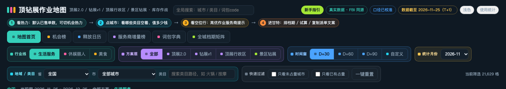
图 0-1 · 顶部全景：标题行 → 四步提示行 → 视图导航 → 两排筛选器。右上角徽章写着数据截至日期。
从上往下数，一共五层
- 标题行：左边是工具名和全局搜索框（placeholder 写着「全局搜索：城市 / 类目 / 词包code」）；右边徽章 真实数据·FBI同源 口径已校准 数据截至 …(T+1)，以及 浅色（切换明暗主题）和 使用统计。看数据新不新，只看「数据截至」这一枚徽章。
- 四步提示行：工具自己写的用法口诀 —— 1 看热力 → 2 点城市 → 3 看空位行 → 4 进甘特。本指引第 2、3 课就是把它展开讲。
- 视图导航：六个页签 地图首页 机会榜 释放日历 服务商增量榜 词包字典 全城档期矩阵。另有俩隐藏页签「城市详情」「单格甘特」，点进去才出现，不用找。
- 筛选第一排（管"看哪种货、看多远"）：行业线（生活服务 / 休娱丽人 / 美食）、方案层（全部 / 顶展2.0 / 钻展v1 / 顶展行政区 / 景区钻展）、时间窗（D+30 / D+60 / D+90 / 自定义）、统计月份（营收卡用哪个月）。
- 筛选第二排（管"看哪里"）：省 市 类目 搜索框，两个勾选 只看未占量城市 只看已有占量，和 一键重置。最右边「当前筛选 N 格」告诉你现在筛出来多少个格子。
所有筛选是全局的：在第一排改了行业线或时间窗，六个视图全部跟着变。迷路了就点 一键重置 回到全国默认。
地图首页中间还有什么
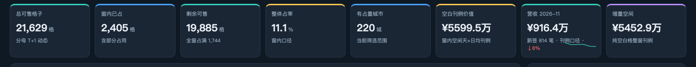
图 0-2 · 八张指标卡：总可售格子 / 窗内已占 / 剩余可售 / 整体占率 / 有占量城市 / 空白刊例价值 / 营收(月) / 增量空间。每张卡下面一行小字是口径。
图 0-3 · 地图右上角控制条：地图|列表 切换、指标下拉（默认「已售单数」）、气泡下拉（空白价值 / 空白格数 / 关闭）。
指标卡不用背，记住三张就够开工：剩余可售（还有多少格能卖）、空白刊例价值（这些空位按刊例值多少钱）、营收（选中统计月已签了多少，刊例口径）。其余五张是解释口径用的。
你能指出「时间窗在哪改」「数据截至在哪看」「一键重置在哪」，本课就过了。
第 1 课六个词：格子 / 词包 / 时间窗 / 占量 / 刊例 / 热度
目标：听懂工具里的黑话。这六个词贯穿所有页面，先花 3 分钟读完再动手。
| 词 | 人话解释 | 在界面上长什么样 |
|---|
| 格子 | 最小售卖单位 = 一个方案 × 一个城市(或区) × 一个词包 × 一段时间。全国默认筛出两万多格，「当前筛选 N 格」就是它。 | 地图上的城市点、明细表里的一行、机会榜里的一行，都是格子。 |
| 方案层 | 四种卖法：顶展2.0（城市级置顶）、钻展v1（城市级钻石展位）、顶展行政区（只卖某个区）、景区钻展（景区类目桶）。方案列常显示成「高频&顶展2.0」这类组合名。 | 筛选第一排「方案层」五个按钮；明细表「方案」列。 |
| 词包 | 一类商户的集合，用类目路径（如 生活服务;法律服务）+ code（如 gp621991）标识。一个词包就是"一类生意的广告位"。 | 明细表「类目路径 / 词包code」两列；第 7 课字典可查全量。 |
| 时间窗 | 你关心未来多少天：D+30 = 今天起 30 天。所有"空闲天、占率、价值"都只算窗内这一段。换窗，数字全变。 | 筛选第一排 D+30 / D+60 / D+90 / 自定义；页面顶部一行小字写着当前窗起止日期。 |
| 占量 / 状态 | 格子在窗内被订单占了多少。四种状态标签：全窗空白（整窗没人占，最好卖）、部分空白（占了一部分，还能插）、全窗占满（卖不了）、即将释放（有订单快到期末，到期后空出来）。订单本身另有五状态：在投 / 待上刊 / 签约中 / 待签约 / 已完成。 | 明细表、机会榜「状态」列的彩色小标签；甘特图上的色块。 |
| 刊例 / 价值 | 刊例价/30天 = 这个格子卖 30 天的挂牌价（不是成交价！）。日均价 = 刊例÷30。窗内价值 = 窗内空闲天 × 日均价，即"这段空档按挂牌价值多少钱"。增量空间 = 只算全窗空白格的整窗刊例。 | 明细表「刊例/30天」「窗内可售价值」列；指标卡「空白刊例价值」「增量空间」。 |
再加三个辅助词
- 热度（0–100）：需求侧打分，看这个类目最近 180 天成交了多少单、最近一单离现在多久。询量不计入热度（口径已定：询量权重 0）。热度高 = 这类商户最近真的在买。
- 高优作业服务商：空位行右侧会提示"哪些服务商能作业这个格子"，带 本地包城 本省 全国 等地盘标签和「等 N 家 展开」。看到空位不知道派给谁，就看这一列。
- 紫边 = 疑似冲突：甘特上某段带紫色描边，表示系统怀疑档期重叠，只做标注、不替你下结论，人工复核后再承诺客户。
全工具所有金额都是刊例口径，不是客户实付、不是底价。对外报价、对内复盘都别把它当成交金额（详见第 11 课）。
随便指一行明细，你能说出它的方案、词包、状态、窗内价值各是什么意思。
目标：回答"我负责的城市，哪些类目空着、值多少钱、派给谁"。这是工具最主线的一条路。
- 看全国热力。打开工具默认在 地图首页，地图颜色 = 各城市已售单数（越亮卖得越多）。先扫一眼哪些省是冷的 —— 冷 ≠ 没机会，冷可能只是没被作业。
- 切到"机会视角"。地图右上指标下拉选 空白刊例价值（机会热力）：地图立刻改按"空位值多少钱"上色，越亮 = 空档越值钱。再开气泡（气泡=空白价值）看绝对量。这一步是找矿，不是看业绩。
图 2-1 · 默认视角：颜色=已售单数，下方城市排行。
图 2-2 · 切「空白刊例价值（机会热力）」后：颜色=空位价值，找矿用这张。
- 点进一个城市。在地图上点城市（或在第二排 市 下拉选），进入城市详情。三个页签：全部明细 / 未占类目 / 窗内可售。找空位直接点 窗内可售。
- 读明细行。每行一个格子：类目路径、区域、状态标签、刊例价/30天、窗内空闲天、最早上刊、窗内可售价值、热度、最近成交、高优作业服务商。表内还有搜索框可再过滤类目/区域。嫌全国太散？第二排勾 只看未占量城市 先圈范围。
- 把结果带走。右上角 导出 CSV 拿表格去分派；复制派单文案 直接生成一段可发群里的文字（含城市、类目、空档、价值、建议服务商）。派单不用手抄。
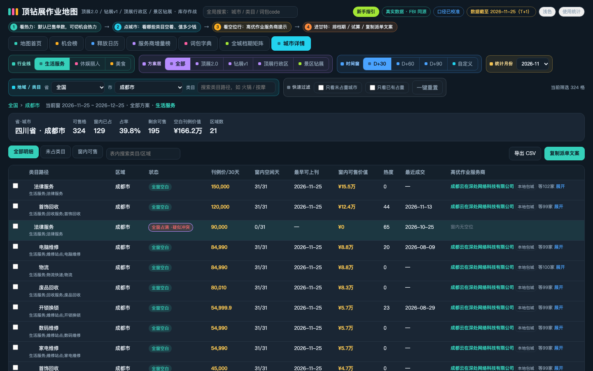
图 2-3 · 城市详情（示例：成都市）：页签 + 明细表 + 导出/复制按钮。
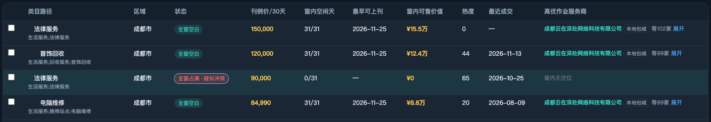
图 2-4 · 放大看行：状态标签、窗内价值，以及右侧「高优作业服务商 + 本地包城 + 等 N 家 展开」。
下钻永远尊重你当前的筛选：带着「美食 + D+60」点进城市，看到的就是美食、60 天窗的明细，不会偷偷变回全国全量。
你能独立完成：切机会热力 → 点一个城市 → 窗内可售 → 复制一段派单文案发到自己群里。
第 3 课谈客户：甘特排期 + 档期试算 + 派单文案
目标：客户说"我想投 12 月 10 号到 1 月 10 号"，你能当场回答能不能排、报多少、最晚哪天签。
- 定位到格子。两条路：① 顶部全局搜索框输入城市/类目/词包code（如「成都」「火锅」「gp621991」），下拉结果里点一条；② 第 2 课明细表里点某一行。都会进入单格甘特。
- 读甘特。横轴是日期，色块是已有订单（在投/待上刊/签约中/待签约/已完成五色），空白处就是能插进去的档期。紫边段 = 疑似冲突，仅标注，承诺客户前人工复核。侧栏「格子档案」写着方案、城市/区域、类目路径、刊例价/30天、日均价、热度。
- 用档期试算器。在「档期试算器：客户意向起止 → 可排 / 冲突 / 部分可排」里填客户想要的起止日期（或点快捷 chips +7 +14 +30 +60 +90 天），结果直接告诉你可排 / 冲突 / 部分可排、可排天数和刊例报价。
- 反推最晚签约日。填上刊日期和提前天数（默认 7 天，假设值可调），点试算，得到「最晚签约日」。谈单时把这条日期甩给客户，比催单话术管用。
- 看谁做过、派给谁。侧栏有历史成交记录；空位则给「高优作业服务商 TOP3 + 评分 + 地盘标签」，点 全量 看全部可作业服务商。谈完用 复制派单文案 把结论发出去；← 上一格 下一格 → 可沿同城刊例价序连续看格。
图 3-1 · 全局搜索：输入即出城市/类目/词包候选，点一条直达。
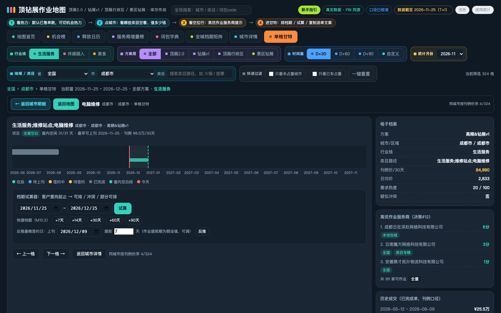
图 3-2 · 单格甘特：色块=已有订单，空白=可插档期；侧栏格子档案 + 服务商推荐。
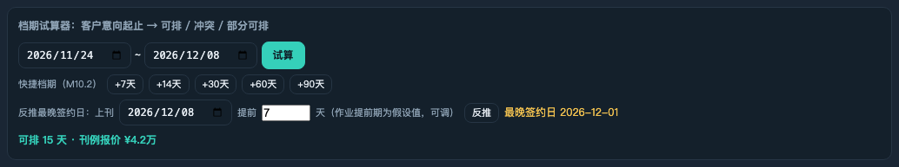
图 3-3 · 试算结果示例：可排 15 天 · 刊例报价 ¥4.2万 · 最晚签约日 2026-12-01。
试算给的报价是刊例口径（空闲天 × 日均刊例），用于内部估量和话术锚点；正式对客报价走你们自己的报价流程，别把工具数字当合同价。
客户给任意起止日期，你能在 1 分钟内给出：可排与否 + 刊例估量 + 最晚签约日 + 建议作业服务商。
目标：不局限一城，直接拿"全国最值钱的空位清单"，做周会弹药或批量派单。
- 点导航 机会榜。默认按窗内价值倒序排：最值钱的空位在最上面。顶部四个数：命中格子 / 窗内价值合计 / 即将释放 N 格 / 当前排序。
- 用四个筛选收窄。状态（全部可售 / 仅全窗空白 / 仅即将释放）、价值下限(元)、热度下限、服务商（只看某家地盘内的空位，含本地包城/本省/全国）。例如「价值下限 100000 + 热度下限 40」= 又值钱又有人买的空位。
- 换排序思路。勾 价值×热度综合分：不再只看钱，而是"钱 × 需求"综合排队，适合挑"好卖又值钱"的格子。
- 抢到期用专区。点页签 即将释放专区（N）：只列窗内有订单到期的格子，按到期日升序 —— 越早释放越靠前，配合第 5 课日历做续单/抢单。
- 带走与转发。导出 CSV / 复制派单文案 / 复制分享链接。分享链接只带筛选条件（行业线/方案/窗/省城市/排序等），同事打开就是你筛好的同一张榜，不带任何个人数据。
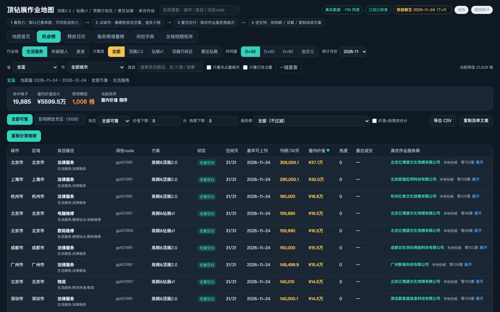
图 4-1 · 全部可售：价值倒序，右侧高优作业服务商 + 展开。
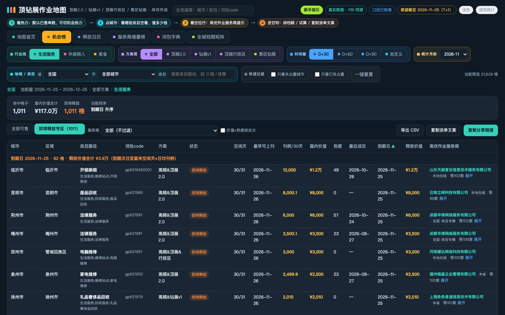
图 4-2 · 即将释放专区：按到期日升序，抢释放专用。
机会榜也吃全局筛选：先在第一排选「美食 + D+60」，榜里就只剩美食、60 天窗的空位。榜单翻页在表格底部。
你能筛出「本省 + 价值≥10万 + 综合分排序」的清单，并把分享链接发进工作群。
目标：把"未来哪天有档期空出来"变成一张日历，提前布局续单和抢单。
- 点导航 释放日历。默认日历视图：每个日期格子里写着当天释放的格子数和金额；颜色越深释放越多。点某一天，下方列出当天释放明细。
- 读"释放"口径。释放价值 = 到期次日起到窗末的空闲天 × 日均刊例。所以同一批订单，D+30 窗和 D+90 窗算出来的释放金额不一样 —— 换时间窗，日历金额跟着变，这不是 bug。
- 找老客续单。明细里标 老客可续 的格子 = 近 180 天有已完成单的类目城市：客户刚投完、档期刚空，续单成功率最高的一批，优先打。
- 换名单视图。点页签 名单视图（金额倒序）：不按天看，直接按释放金额从大到小排清单，适合"这周先打哪几个电话"。
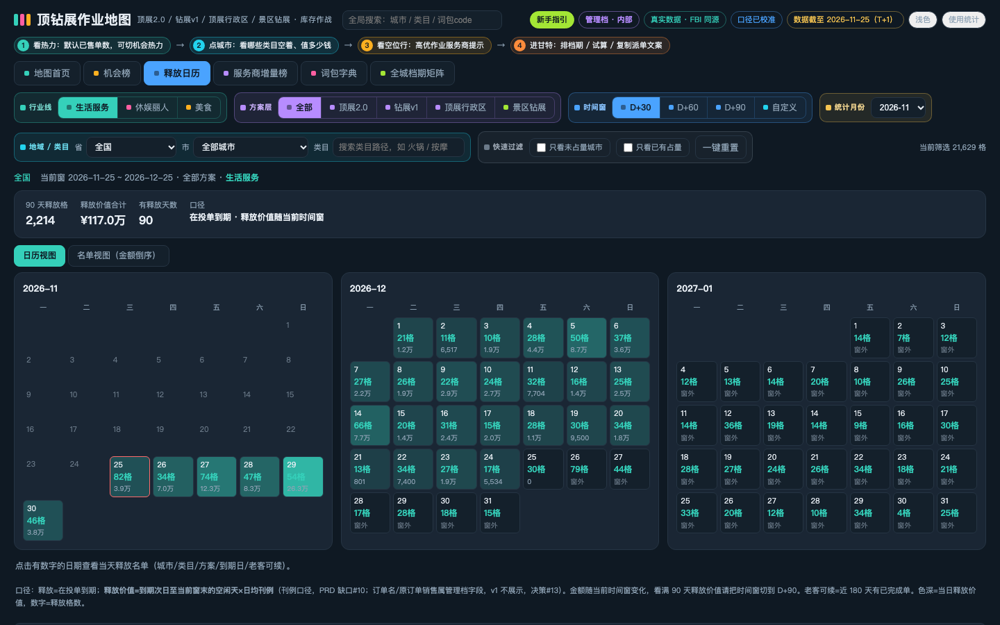
图 5-1 · 日历视图：日期格 = 当天释放格数 + 金额。
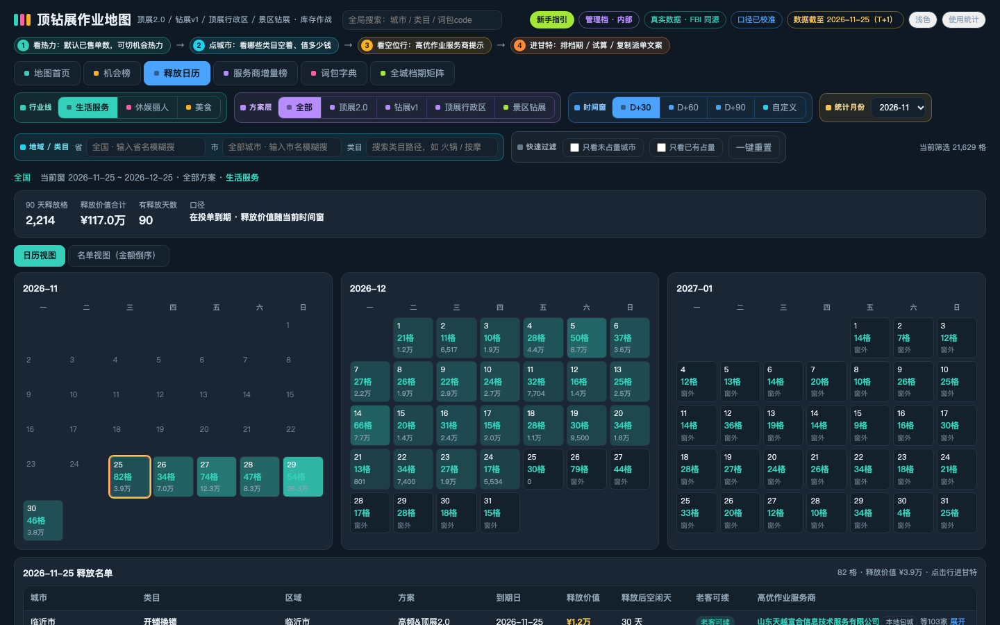
图 5-2 · 点某一天：展开当天释放明细，含老客可续标记。
你能回答「下周三有哪些格子释放、合计值多少、哪几个是老客可续」。
目标：站在服务商视角看"你的地盘里还有多少没卖的钱"，用于服务商沟通与目标拆解。
- 点导航 服务商增量榜。顶部：服务商总数、分组（美食 / 高频 / 文旅牌照）、盘子口径说明；右上搜索框可按服务商名称找。
- 读一张卡。每张卡 = 一家服务商：名称 + 地盘标签（全国 / 本地包城 / 本省 / 特殊规格），下面五行：覆盖城市数、可作业盘子(格)、已售(格)、覆盖率(带进度条)、增量空间(元)。增量空间 = 覆盖格中全窗空白格的整窗刊例价值。
- 点卡下钻。点任意卡片 → 跳到机会榜并自动过滤到这家服务商的地盘：立刻看到"它还能卖哪些格子"，沟通时直接对着清单谈。
图 6-1 · 卡片墙：分组标题行写着家数与合计增量空间，并注明「重叠未去重，不可直接加总对外」。
各家盘子允许重叠，合计增量空间不可加总对外。同一个格子可能同时落在多家服务商的可作业范围里，分组标题的合计是"未去重"口径，只供内部看量级。对外只说单家、或说去重后的全国增量空间（指标卡那张）。
你能搜到一家服务商、读出它的覆盖率与增量空间、点卡拿到它的机会清单。
目标：客户说"我做火锅/按摩/法律服务"，你能立刻对应到词包和售卖规则。
- 点导航 词包字典。左侧是按行业线分层的类目树，搜索框输入关键词（如「火锅」）会自动展开命中分支，不用一层层点。
- 读叶子节点。每个叶子 = 一个词包：类目路径 + code + 状态标记 + 最大置顶距离等售卖参数。状态标记告诉你这个词包当前能不能卖、属于哪种方案。
- 看详情、跳机会。点叶子打开详情弹窗：完整路径、code、售卖参数、覆盖情况；右下角 机会榜看此类目 一键带着这个类目跳机会榜 —— 从"客户做什么生意"到"哪里有空位"只隔一次点击。
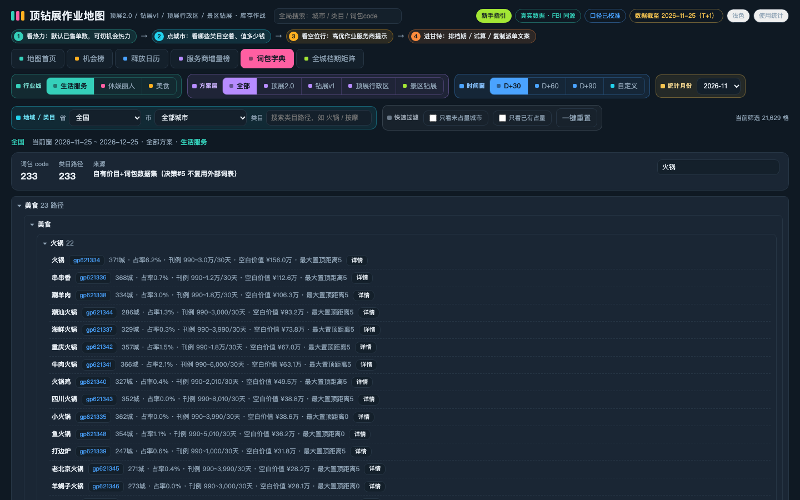
图 7-1 · 搜「火锅」：命中分支自动展开。
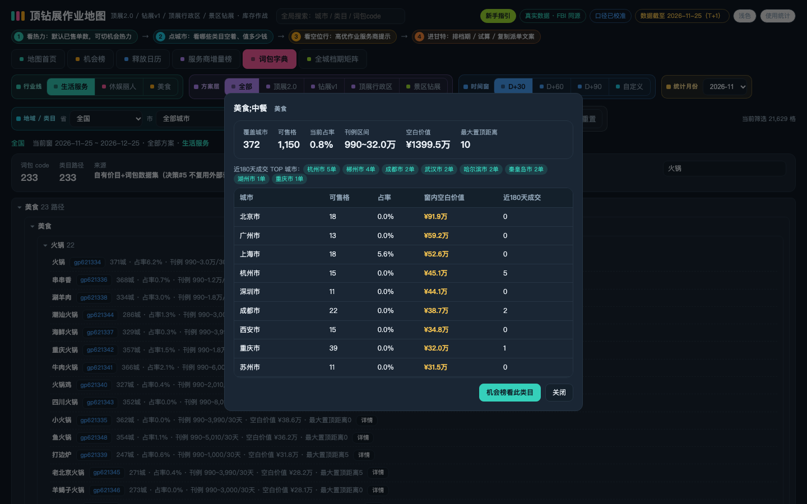
图 7-2 · 详情弹窗：路径 / code / 售卖参数 + 「机会榜看此类目」。
客户报一个生意类型，你能在字典里找到对应词包 code，并一键看到该类目的全国空位。
第 8 课进阶：全城档期矩阵 / 景区钻展 / 统计月份
目标：三个进阶视角，月粒度总览、景区货、以及营收卡的时间开关。前七课够用后可再学。
8.1 全城档期矩阵：月粒度看全国
导航 全城档期矩阵：行 = 省（点省行折叠/展开到城市），列 = 月份（前 3 个月 + 后 9 个月）。每格颜色四态：在投(绿) / 到期(黄) / 预排期(蓝) / 待售(红)；金色列 = 当前选中统计月。鼠标悬停看该城该月订单摘要，点城市格进该城刊例价最高格的甘特。
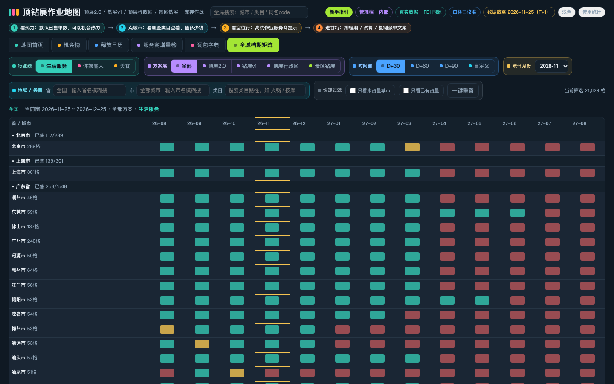
图 8-1 · 矩阵：省行可折叠，月列四色；底部图例写明「日粒度排期以单格甘特为准」。
矩阵是月粒度总览，用来扫"哪片城市哪几个月有空档"；真要排具体日期，回到单格甘特（日粒度）。
8.2 景区钻展：另一种货
第一排方案层选 景区钻展：格子粒度变成景区类目桶（不是城市×词包），侧栏多一个 POI 宇宙（该桶覆盖多少景区 POI）。景区当前没有金额口径（刊例待补），所以景区视图只看不算钱：看覆盖、看空档、看 POI 规模。
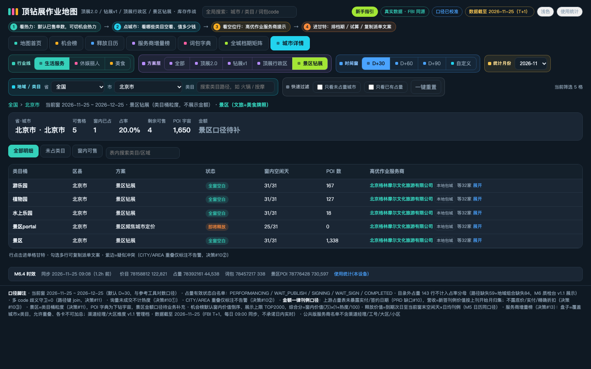
图 8-2 · 景区钻展（示例：北京市）：类目桶粒度 + POI 宇宙，金额列显示「景区刊例口径待补」。
8.3 统计月份：营收卡的时间开关
第一排 统计月份 下拉只影响营收卡和相关趋势：选 2026-11 就看 11 月新签笔数与刊例金额、环比箭头；选别的月就切到那个月。它不影响占量/空位/机会榜（那些永远跟时间窗走）。矩阵的金色列也跟着它走。
你能用矩阵指出"某省未来三个月哪几个月待售最多"，并说清景区为什么没有金额。
目标：外勤路上用手机也能查空位、抄清单；电脑上用键盘更快。
- 手机默认进列表模式（屏宽 <700px 时地图自动改列表），省流量也省眼睛；想看地图点 地图|列表 切回。筛选器在手机上折行排列，功能一个不少。
- 手机推荐路线：机会榜（筛好本省/价值下限）→ 点行看格 → 复制派单文案 → 粘贴进钉钉群。全程不用打字搜索。
- 浅色主题：右上角 浅色 一键切换，白天户外看浅色更清楚；选择会记住。
- 键盘：搜索下拉里 ↑ ↓ 移动候选、Enter 选中、Esc 关弹窗/下拉。谈单时手不离键盘。
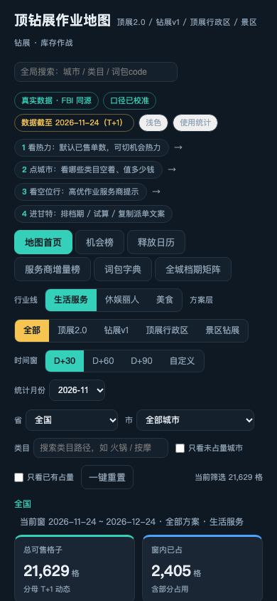
图 9-1 · 手机首页：默认列表模式。
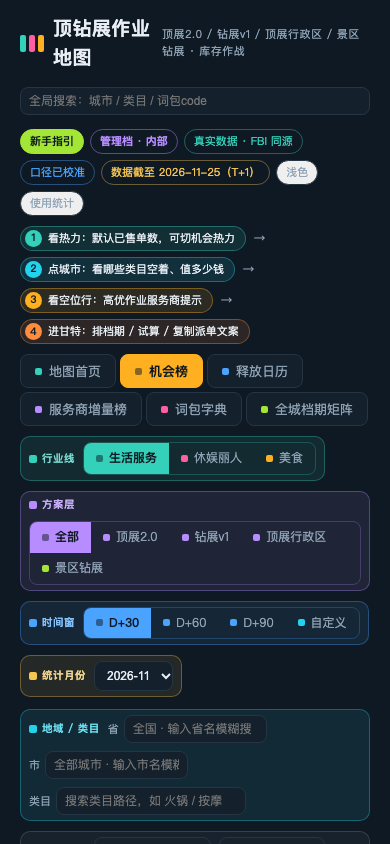
图 9-2 · 手机机会榜：筛选折行、卡片化行。
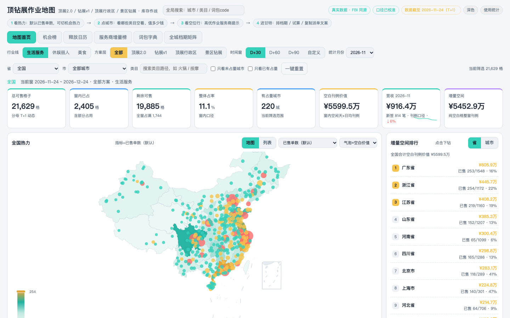
图 9-3 · 浅色主题全貌：户外/投屏友好。
你在手机上完成过一次「筛机会 → 复制派单文案 → 发群」。
目标：遇到"数不对/找不到/不敢说"先来这里，多数疑问是口径问题不是 bug。
金额为什么和成交/实付对不上？
全工具金额都是刊例口径（挂牌价推算），不是实付、不是底价、不是合同额。它用于估量级、排优先级、做话术锚点。对客报价与财务复盘请走正式口径。
数据多久更新？为什么徽章日期是昨天？
每天 09:00 自动同步，口径 T+1（今天看到的是昨天的库存快照），所以「数据截至」通常是昨天，正常。若超过 26 小时未更新，页面顶部会出红色时效告警横幅，并继续展示上次成功口径；同步失败会自动重试 3 次、间隔 10 分钟。
换了时间窗，所有数字都变了，是不是坏了？
没坏。空闲天、占率、窗内价值、释放金额全部只算窗内。D+30 和 D+90 是两张不同的账，对比时先统一窗。页面顶部小字写着当前窗起止，核对它。
「即将释放」和「全窗空白」有什么区别？
全窗空白 = 整个窗内没有任何订单，现在就能卖整窗。即将释放 = 窗内有订单但快到期末，到期次日之后才空出来；释放价值只算到期后到窗末那段。抢释放要算好客户上刊日是否接得上。
甘特上的紫边是什么意思？能直接承诺客户吗？
紫边 = 疑似冲突，仅标注。系统怀疑档期重叠但不替你裁决；承诺客户前请人工复核订单实际起止。工具不做自动排期决策。
为什么有些类目/区域在明细里找不到？
存在目录外的路径与地域（当前 143 行：路径 59 + 地域 84），它们不计入占率分母、也不在主明细里展示，避免污染口径。字典里查不到 ≠ 数据错，先确认是否目录外。另有极个别地名歧义（如「贵阳省」）会被标记待人工确认。
景区为什么没有金额？
景区钻展的刊例口径待补，当前只给类目桶覆盖、空档与 POI 宇宙，不给钱。别用景区格子去凑金额合计。
询量为什么不算进热度？
口径已定：询量权重 0。热度只认真实成交（近 180 天已完成单数 + 最近成交距今时长），避免"问得多买得少"的类目虚高。
公开版能看到订单名、原销售、渠道经理工号吗？
看不到。公开版不含订单名称、原销售、渠道经理工号/大区/小区等内部字段；服务商维度只给名称与地盘标签。管理档（订单名/原销售等）规划在 v1.1，不在本公开链接里。
分享链接会泄露我的筛选或个人数据吗？
分享链接只带筛选条件（行业线/方案/窗/省市/类目/排序等），不含任何个人身份或本地记录。同事打开 = 你筛好的同一张视图。
导出的 CSV 用 Excel 打开乱码？
文件带 UTF-8 BOM，正常双击 Excel 不应乱码；若仍乱码，用「数据 → 从文本/CSV 导入」选 UTF-8。ID/code 列请按文本看待，别让 Excel 转成科学计数。
搜城市搜不到，比如「陵水」？
城市用全称存储与匹配（如「陵水黎族自治县」）。搜简称命中不了时改搜全称，或直接用省→市下拉选。下拉与搜索都支持模糊输入。
手机上为什么没有地图？
屏宽 <700px 默认列表模式（性能与可读性考虑），点 地图|列表 可切回地图。不是功能缺失。
服务商增量榜各家加起来为什么比全国大？
各家可作业盘子允许重叠（一个格子可被多家作业），分组合计是未去重口径，页面已注明「不可直接加总对外」。全国去重口径看指标卡「增量空间」。
以上 14 条扫一遍，日后 90% 的"数不对"都能自己解释。
目标：记住四条红线，工具好用但口径有边界，说错比不说更伤。
- 金额只说刊例。对外表述统一加"刊例口径/估量"字样；不露底价、不露实付、不把工具金额当合同额。
- 增量空间不加总。服务商盘子重叠未去重，分组合计只供内部看量级；对外用单家或全国去重口径。
- 冲突只标注不裁决。紫边疑似冲突、目录外行、地名歧义标记，都是"提请人工复核"，不是结论。
- 数据 T+1 且公开无内部字段。对外转发链接安全（无登录、无个人数据、无内部字段），但别承诺"实时库存"；以徽章「数据截至」为准。
免责：本工具为作业辅助视图，库存与档期最终以业务系统订单为准；刊例估量不构成报价承诺。景区金额口径、管理档字段等待后续版本补齐。
你能用一句话向同事解释："这是刊例口径的 T+1 库存作业地图，空位和释放看它，成交和报价看业务系统。"